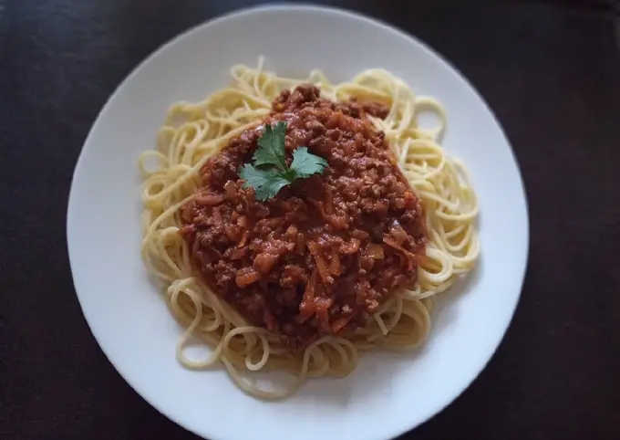

Recetas de Comidas chilenas

Quien se puede resistir a un plato así... 😋 en mi casa es uno de los platos estrella y me di cuenta que hace mucho tiempo no lo preparaba mi hijo mayor estaba más que feliz
Ingredientes
- 400 gr de tallarines
- 250 gr de carne molida
- 1/2 cebolla cortada a cuadritos
- 1 zanahoria
- 2 dientes de ajo
- 400 gr de salsa de tomates
- 1/2 cucharadita de orégano
- 1 cucharadita de pimentón
- 1/4 cucharada de comino
- 1 cucharada de salsa inglesa
- Sal y pimienta a gusto
- 2 Cucharadas de aceite
- 1/2 taza de agua
Pasos a seguir
- En un wok o sartén profundo, agregar dos cucharadas de aceite y sofreír la cebolla cortada en cuadritos y el ajo picado
finamente por unos 5 minutos hasta que la cebolla esté dorada, agregar la zanahoria rallada, revolver un par de minutos
y agregar la carne molida, sal y los condimentos que utilizaremos, cocinar hasta que la carne esté cocida (entre 15 a 20 minutos)
- Agregar la salsa de tomate y la media taza de agua fría para ligar los sabores y cocinar por 5 minutos más,
en este tiempo se habrá reducido la salsa. Reservar.
- Mientras se está haciendo la salsa boloñesa, hacemos los tallarines. En una olla con agua hirviendo y sal a gusto, agregar los tallarines y cocinar como indica el paquete que estén preparando (en mi caso para que estén al dente son 8 minutos). Pasado el tiempo conservar 1/4 taza del agua de cocción.
Drenar el agua de los tallarines y agregar el agua de cocción reservada más un chorrito de aceite de oliva (o el aceite de preferencia)
mezclar para que emulsione.
- Y listo! Ahora sólo servimos nuestros tallarines y coronamos con la salsa boloñesa 🍝 Un riquísimo almuerzo que encantará a adultos y niños 😋
Buen provecho!
Inicio